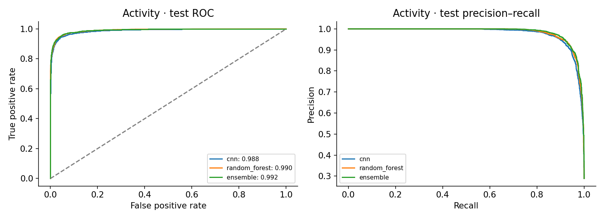
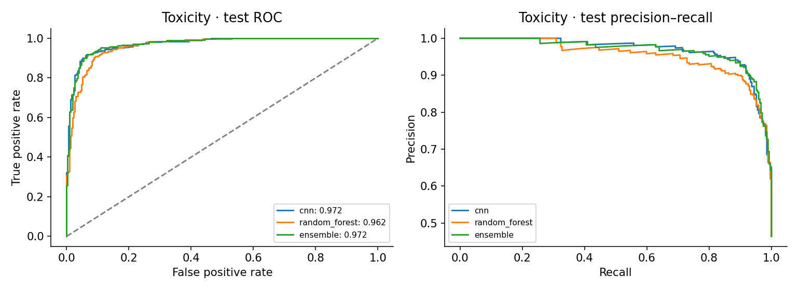
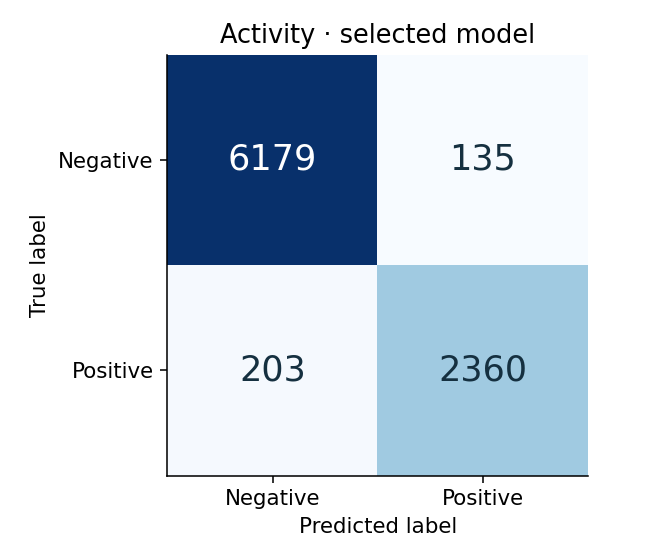
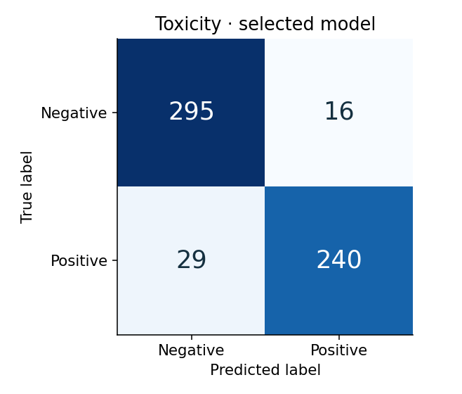
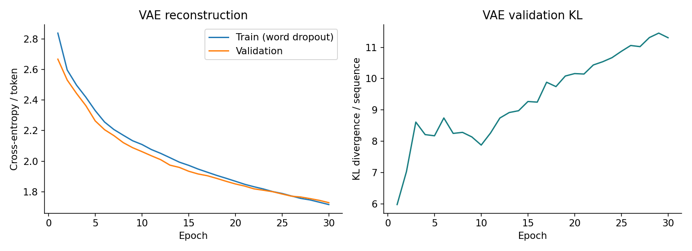
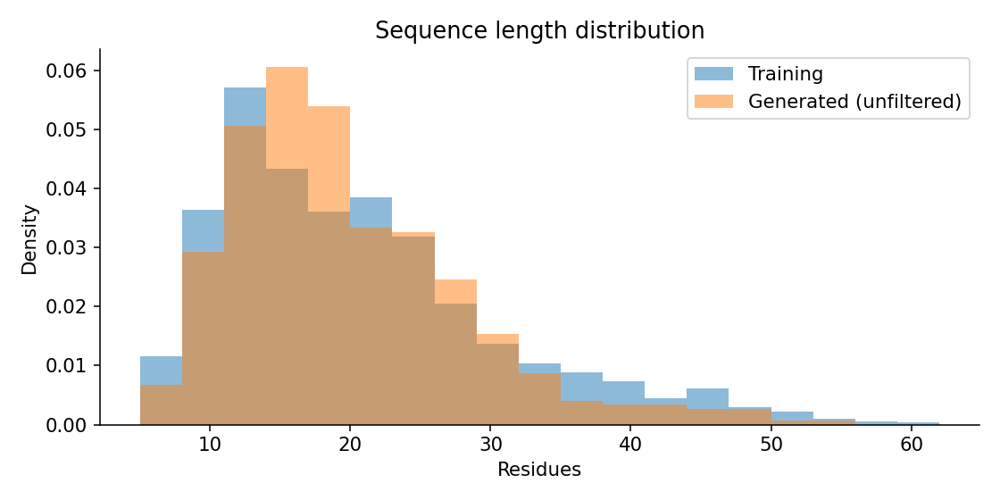

DSC4804 · STATISTICAL LEARNING · GROUP 4
AI-Based Generation and Screening of Antimicrobial Peptides Using Deep Learning
Chirag · Hurshvardhan Rao · Aniket Mishra
1. Abstract
PeptideLab implements an end-to-end computational workflow for peptide generation, activity classification, toxicity classification and candidate ranking. An LSTM variational autoencoder learns from GRAMPA sequences. Independent compact CNN predictors and random-forest baselines learn from published UniDL4BioPep labels. A local Streamlit interface provides reproducible sampling, user-input screening, evaluation views and CSV export. All results below are computed from saved evaluation artifacts, not copied from research papers.
2. Problem and scope
The objective is to reduce a large sequence search space to a computational shortlist. This implementation predicts binary antimicrobial-class membership and a benchmark toxicity label; it does not predict MIC, organism-specific potency or comprehensive safety. Candidate predictions require future experimental investigation.
3. Data and preprocessing
GRAMPA contains 51,345 experimental records and the supplied cleaned file contains 6,760 unique sequences. The final VAE uses 6,510 canonical sequences of length 5–60: 5208 training, 651 validation and 651 test sequences. Classifiers use canonical sequences of length 5–200. Published classifier test splits are retained. Conflicting-label sequences and exact duplicates are removed; any exact train/test overlap is removed from training. Twenty percent of the remaining training set is reserved for validation. Scaling is fitted only on training data.
| Task | Split | rows | positive | negative |
|---|---|---|---|---|
| activity | train | 10671 | 3082 | 7589 |
| activity | validation | 2668 | 771 | 1897 |
| activity | test | 8877 | 2563 | 6314 |
| toxicity | train | 2627 | 1330 | 1297 |
| toxicity | validation | 657 | 333 | 324 |
| toxicity | test | 580 | 269 | 311 |
Original downloads are pinned to a repository commit and checksummed in Data/external/sources.json. Detailed exclusion counts are stored in each task's data audit JSON.
4. Architecture
Generator: embedding dimension 32; LSTM hidden dimension 96; latent dimension 24. The encoder predicts mean and log variance. Reparameterization samples a latent vector; the decoder receives this vector at every step and through its initial state. Training uses masked reconstruction cross-entropy, KL warmup to weight 0.02, word dropout 0.2, gradient clipping and validation-based checkpoint selection.
Predictors: each task has a separate model. A 24-dimensional residue embedding feeds 32 convolution filters at each kernel width 3, 5 and 7. Masked global max pooling produces 96 features, concatenated with 25 standardized sequence descriptors. A 48-unit hidden layer and dropout feed a binary output. Random forests with 240 trees provide baselines. Validation ROC-AUC selects the best CNN checkpoint and one of CNN, forest or their equal-weight average.
Ranking: 100 × activity_score × (1 − toxicity_score). This is a transparent prioritization rule, not a probability of success. Sampling filters reject truncation, out-of-range length, very low complexity, exact known sequences and duplicates.
5. Held-out classification results
| Task | Model | accuracy | precision | recall | f1 | mcc | roc_auc | average_precision |
|---|---|---|---|---|---|---|---|---|
| Activity | cnn | 0.9554 | 0.9211 | 0.9247 | 0.9229 | 0.8915 | 0.9882 | 0.9784 |
| Activity | random_forest | 0.9589 | 0.9519 | 0.9032 | 0.9269 | 0.8989 | 0.9905 | 0.9822 |
| Activity | ensemble (selected) | 0.9619 | 0.9459 | 0.9208 | 0.9332 | 0.9067 | 0.9916 | 0.9839 |
| Toxicity | cnn (selected) | 0.9224 | 0.9375 | 0.8922 | 0.9143 | 0.8444 | 0.9718 | 0.9680 |
| Toxicity | random_forest | 0.9086 | 0.9000 | 0.9033 | 0.9017 | 0.8163 | 0.9617 | 0.9528 |
| Toxicity | ensemble | 0.9207 | 0.9240 | 0.9033 | 0.9135 | 0.8405 | 0.9719 | 0.9662 |
All metrics use the held-out cleaned published test splits. Classification threshold is 0.5. Positive means antimicrobial for activity and toxic for toxicity. Selection was performed using validation AUC, before calculating test results.




6. Generation evaluation
In a fixed unfiltered sample of 500 outputs, 500 were distinct; exact novelty against GRAMPA was 100.0%; natural END rate was 100.0%. Teacher-forced test token accuracy was 49.0%, with cross-entropy 1.670. These reconstruction metrics supply the true previous tokens and are not free-running reconstruction accuracy.
Alphabet and minimum-length validity are enforced by decoding. Uniqueness and exact novelty do not demonstrate antimicrobial function or low toxicity. The generator is a statistical proposal mechanism, and quality must not be inferred solely from a large number of unique strings.


7. End-to-end demonstration
The saved run uses seed 42 and temperature 0.9. It samples 750 sequences, accepts 637 before the requested limit, and returns 50 candidates. These are the first accepted samples, subsequently ranked by the two predictors.
| sequence | activity_score | toxicity_score | priority_score |
|---|---|---|---|
| GRLRRVVYYRTVRVRVTARLLRK | 0.9999 | 0.0012 | 99.8694 |
| RNFFKKVYRFKVRRVFGIFKRRKK | 0.9994 | 0.0009 | 99.8464 |
| GLLSSVGKLAGNVFKSVVPTIANSL | 0.9993 | 0.0010 | 99.8287 |
| GIMSTIKGALKKVAKTIISGIAEKL | 0.9999 | 0.0020 | 99.7917 |
| GLLGSLVRALRKIL | 0.9992 | 0.0015 | 99.7719 |
| GIGSVLKGAGKALAHGLAKLIAKQIQQQ | 0.9999 | 0.0028 | 99.7118 |
| GIGAVVSLESMKGLPDLLSKIQCKCTK | 0.9997 | 0.0034 | 99.6246 |
| GIGKLFKALGKLIGGLIK | 1.0000 | 0.0061 | 99.3899 |
| RIRKKRKKFLRKFRMKI | 1.0000 | 0.0068 | 99.3183 |
| RIPLPFPRPRPVFVVVIRRFVSSG | 0.9981 | 0.0057 | 99.2419 |
8. Interface and reproducibility
Run python -m streamlit run app.py or double-click RUN_PROJECT.bat. Saved weights support offline CPU inference. The five pages are Overview, Generate & rank, Screen sequences, Model results and Learn the project. Retraining uses python -m peptide_lab.training; batch generation uses python -m peptide_lab.pipeline. Rebuild this report after changing models. Package versions and artifact hashes are recorded in Results/final/run_manifest.json.
9. Limitations and future work
There is no laboratory validation. Model scores are not calibrated probabilities. The classifier evaluation removes exact overlap but does not cluster by sequence similarity, so homologous sequences can cross splits. Activity positives and negatives have different sequence-length distributions, creating an exploitable benchmark bias. Toxicity classes are dataset-specific. Novelty checks exact matches against supplied sequence pools only. The VAE does not guarantee biological function. Further work should include similarity-clustered evaluation, score calibration, external datasets, MIC/species-specific prediction and experimental investigation.
The implementation uses compact learned residue embeddings, not ESM-2. It is inspired by the charter's baseline studies and uses their publicly shared benchmark data, but does not claim to reproduce their architectures or published results.
10. Sources and contribution disclosure
AI assisted implementation, testing and documentation. The team is responsible for understanding, verifying and presenting the work, and should disclose assistance according to the project charter.